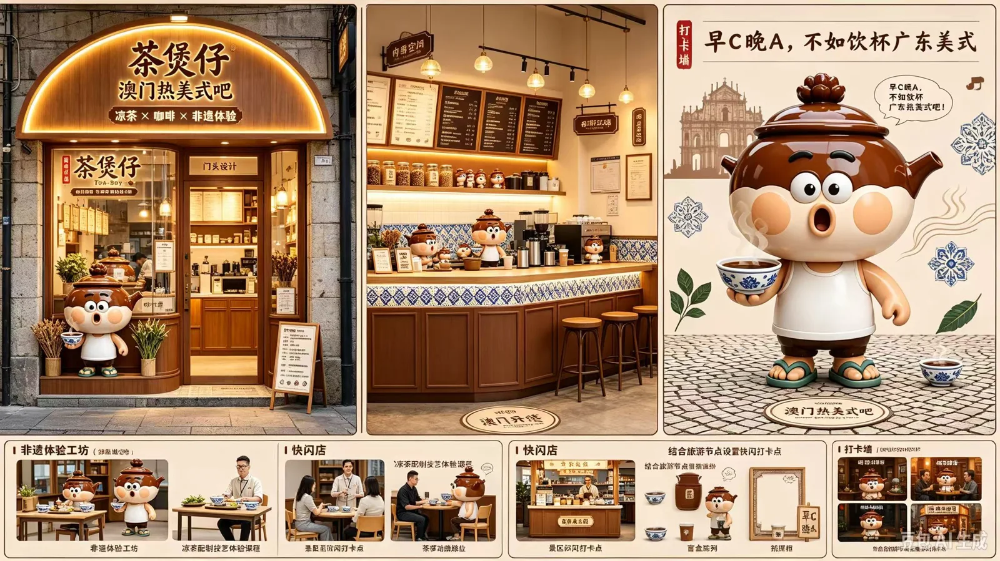
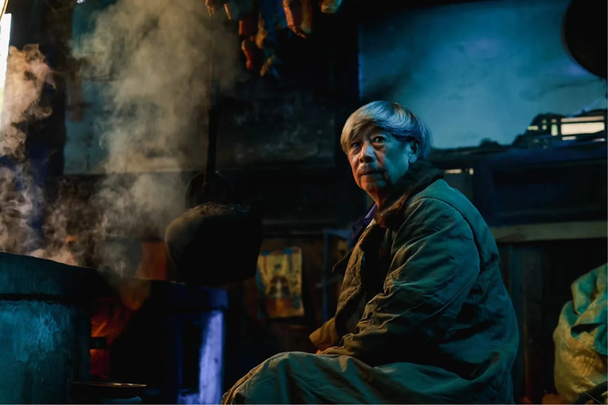
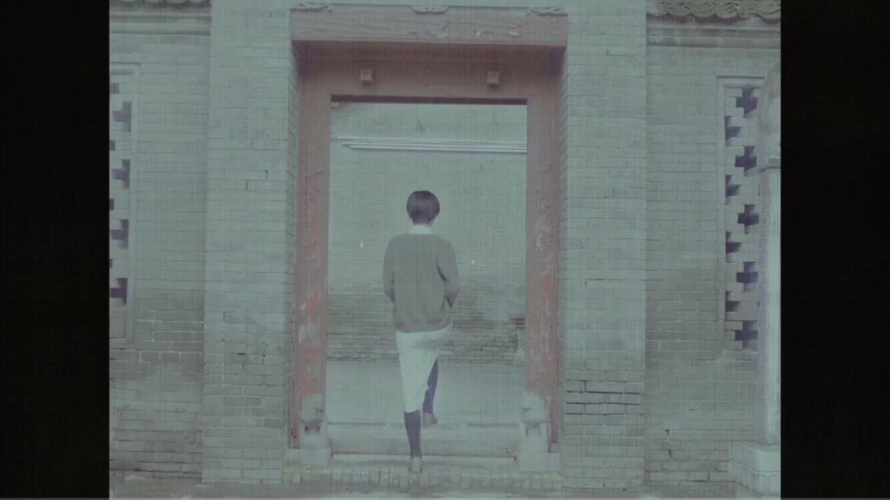

先理解受众
桌面研究、访谈与平台反馈，寻找内容切入点。
调研 · 受众洞察 · 选题OPEN TO MARKETING OPPORTUNITIES
我是邓云馨，传播学硕士在读。
从受众与文化洞察出发，把想法变成
可发布、可传播、可复盘的内容。

文化洞察 → 原创 IP
STORYTELLING先用作品说话。SELECTED EVIDENCE
01 / SELECTED CASES
从内容运营到传播执行，
四个案例，呈现不同侧面的实践。
独立运营小红书宠物账号，完成选题、创作与品牌合作；将高互动内容适配到 Threads，继续验证传播反馈。
查看案例 ↗
CULTURE IN MOTION▶ 观看作品 · 05:29从地方手艺到人物故事，用选题、叙事与现场拍摄呈现文化。含人物纪录片《书法之于我》完整视频。
观看纪录片 ↗ ON THE GROUND.
ON THE GROUND.参与两届航展媒体宣传工作，连接媒体接待、采访协调、内容整理与传播复盘。
查看案例 ↗把地方文化与年轻人的情绪连接，延展为原创角色、品牌视觉和内容场景。个人原创 IP 概念设计。
查看案例 ↗02 / CREATIVE EXPLORATION
从分镜脚本到画面生成与剪辑，
探索产品信息、人物设定与短视频叙事的表达。
03 / PRODUCTION SKILLS
用采编、摄影与制作能力，
把策划推进到具体内容。
HOW I WORK
桌面研究、访谈与平台反馈，寻找内容切入点。
调研 · 受众洞察 · 选题把产品与文化信息，转化为文案、视觉与影像。
脚本 · AI 创作 · 影像制作结合数据与实际执行，复盘内容和传播方式。
Excel · SPSS · TableauEXPERIENCE
内容生产、公众号运营与传播执行
2024.10 — 2025.12
危机公关与媒体宣传部门实习生
参与媒体对接、采访统筹、新闻报道整理及公司微信公众号运营；协助舆情监测、媒体沟通与危机公关应对，参与新闻通稿、宣传物料及应对口径撰写，为品牌传播与舆情管理提供支持。
2024.07 — 2024.09
记者实习生
在融媒体中心参与残运会、领导人访问等活动报道跟进，开展桌面研究与选题策划，独立完成文稿和线下采访调研；参与珠海电视台新闻剪辑及“珠海特区报”新媒体短视频制作，署名作品发布于官方视频号，协助微信公众号内容编辑、排版及推送。
2023.07 — 2023.08
摄影助理
沟通顾客拍摄需求并推进拍摄计划，协助摄影师完成布光与灯光布置，参与照片后期制作，积累摄影执行与视觉内容创作经验。
2022.10 — 2022.11
危机公关与媒体宣传部门实习生
协助媒体接待与现场采访安排，参与舆情监测、新闻通稿撰写和宣传物料制作；策划“我与航展共成长”系列活动。
2025.09 — 2027.08
传播学
整合营销传播、品牌策略传播、社会统计分析、媒介心理学
2021.09 — 2025.06
广播电视编导
影视策划、视听语言、摄像与剪辑
2026.08
Operational Marketing · Online Marketing
LET’S MAKE SOMETHING THAT CONNECTS.